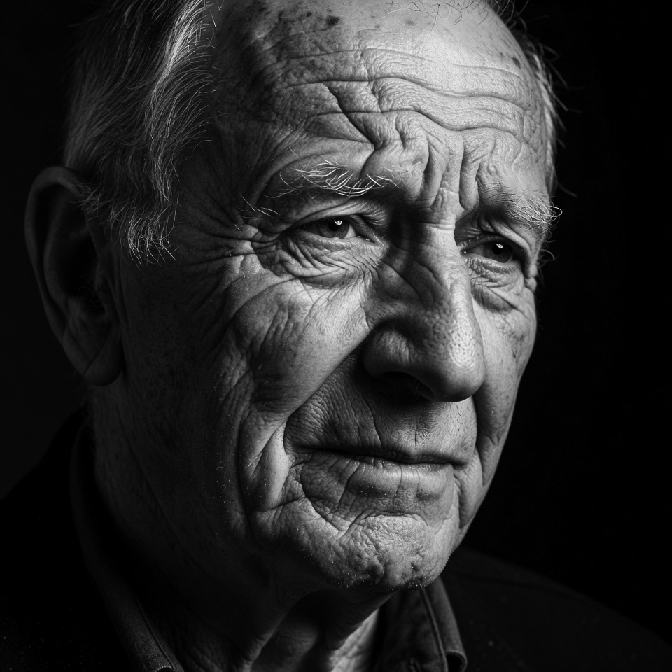
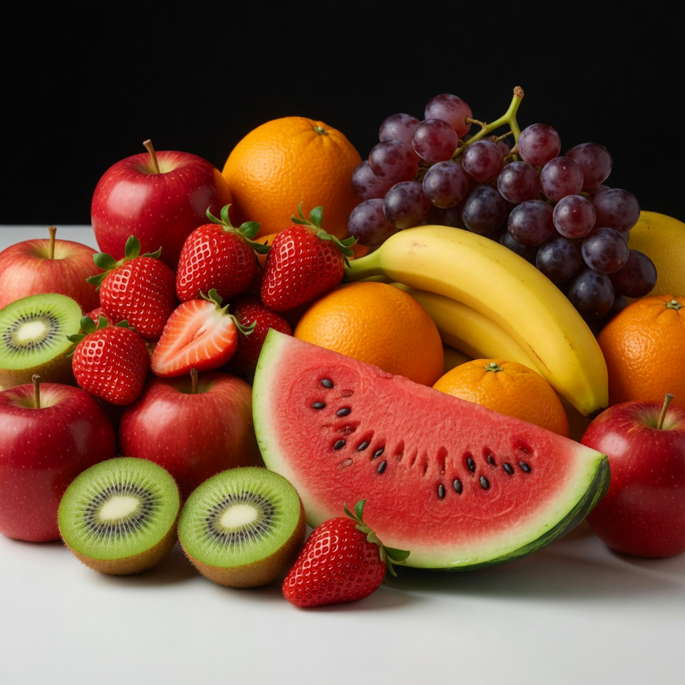

LUT TIFF Builder
Generate an identity LUT as a TIFF image, edit it in any colour-managed application (Photoshop, Affinity, GIMP), then import the result as a portable LUT JSON file. Any colour operation the editor can perform — profile conversions, tone curves, creative grades, CMYK separations — gets captured as a reusable, high-speed LUT.
Accurate colour management — not Hald CLUT.
This tool is designed for ICC-accurate colour transforms: capturing press profiles,
cross-space conversions (sRGB → CMYK, AdobeRGB → sRGB, etc.), and
device-link LUTs that preserve colour intent and process provenance.
It supports 1D tone curves, 3D RGB, and 4D CMYK grids — channel counts
that Hald CLUT does not support.
Hald CLUT is an RGB-only creative grading format with no metadata, no colour space identity, and no cross-space capability. The LUT format here carries a full ICC chain, content signature, and is interoperable with jsColorEngine's WASM-SIMD pipeline.
Hald CLUT is an RGB-only creative grading format with no metadata, no colour space identity, and no cross-space capability. The LUT format here carries a full ICC chain, content signature, and is interoperable with jsColorEngine's WASM-SIMD pipeline.
1
Generate
Pick type & settings, download identity TIFF
Pick type & settings, download identity TIFF
2
Edit
Open in Photoshop, assign profile, apply adjustments
Open in Photoshop, assign profile, apply adjustments
3
Save
File → Save As → TIFF — LZW compression, not JPEG
File → Save As → TIFF — LZW compression, not JPEG
4
Import
Upload the edited TIFF → get LUT JSON
Upload the edited TIFF → get LUT JSON
① Generate identity TIFF
Creates a neutral starting LUT. Every pixel is its own input value — edit it in Photoshop to bake in colour transforms.
Preview images (drawn next to the LUT grid)


② Import edited TIFF
Upload the TIFF you saved from Photoshop. The LUT parameters are read from embedded XMP metadata, and the chain output descriptor is updated from the embedded ICC profile.
Click or drag & drop an edited TIFF
Supports LZW, ZIP, and uncompressed · 8-bit and 16-bit · RGB and CMYK
Photoshop workflow guide
Editing the identity TIFF
- Open the downloaded TIFF in Photoshop.
- Check that the correct colour profile is assigned (Edit → Assign Profile).
- Apply your adjustments: Curves, Hue/Saturation, selective colour, or
convert to a different colour space (Image → Mode → Convert to…). - Save as TIFF: File → Save As → TIFF.
- In the TIFF options, choose LZW compression — smaller file, lossless.
Never use JPEG compression — it corrupts the solid pixel blocks.
What the TIFF captures
- Curves adjustment — tone response modification
- Hue/Saturation — selective colour shifts
- Convert to CMYK — captures Adobe's CMM exactly
- Convert to Greyscale — creates an RGB→Gray LUT
- Photoshop Action — any automated pipeline
- Any other colour op — the editor's math is the LUT
⚠ Always use TIFF + LZW, never JPEG.
JPEG compression adds artefacts to the solid pixel blocks and will cause the import to fail the spread-validation check.
JPEG compression adds artefacts to the solid pixel blocks and will cause the import to fail the spread-validation check.
💡 You can change the preview images in Photoshop — they are for visual
reference only and are ignored on import. Only the LUT grid region
(top-left of the TIFF) is read back.